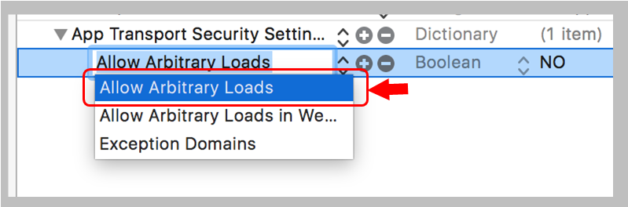

localhostにアクセスする設定（非セキュアな通信）
HTTPS ではなく HTTP で通信を行う
localhost にアクセスする
これらを行うためにはセキュアな通信を保証する機能 App Transport Security（ATS）を無効化する必要がある。info.plistを編集し、次の設定を追加する。
plistの編集は少し癖があって、気をつけないと既存の設定を壊してしまうことがある。操作について少し詳しく説明する。
作業を行う前に info.plistファイルのバックアップをとっておく。
Property Listのいずれかの行ににカーソルをおくと、新しい設定を追加するプラス(+)ボタンが現れるのでクリックする。
その行の設定の次に新しい設定が挿入される。最後の行の後ろに追加するのがわかりやすいと思う。後から移動も可能。
マイナス(−)ボタンを押すとその行の設定が削除されてしまうので注意。
追加できる設定の候補がリストに表示されるので、「App Transport Security Settings」を選ぶ。
設定名の先頭の三角矢印を下向きにし、要素を追加するプラス(+)ボタンをクリックする。これにより、この設定の属性を追加することができる。
追加できる属性の候補がリストに表示されるので、「Allow Arbitrary Loads」を選ぶ。

初期値は "NO"になっているので "YES" に変える。
カーソルを"NO"の位置におき、ダブルクリックするとテキスト編集可能となる。
info.plistの中身はXMLファイルで、設定は次の通り。ファイルを直接編集して追加してもかまわない。